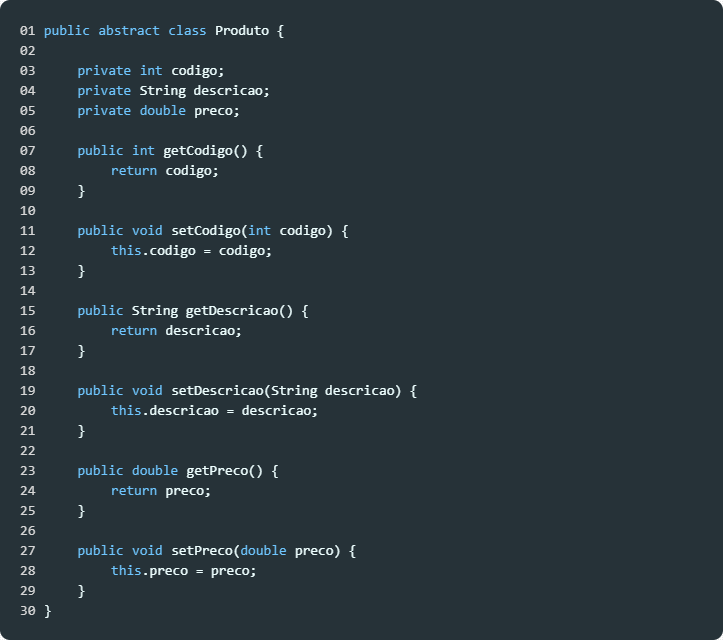
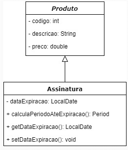
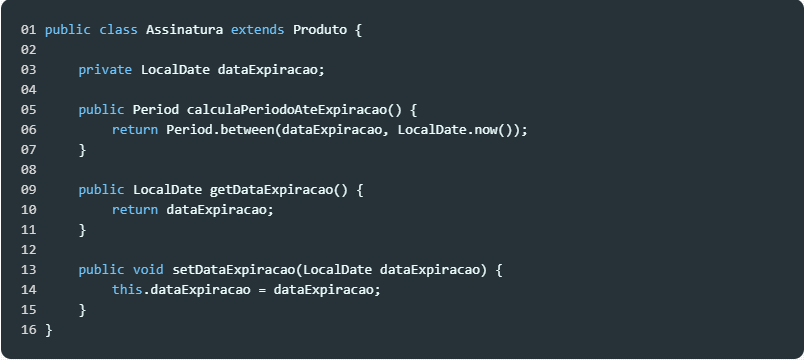
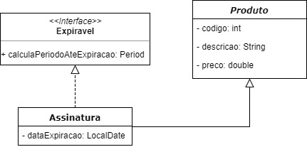
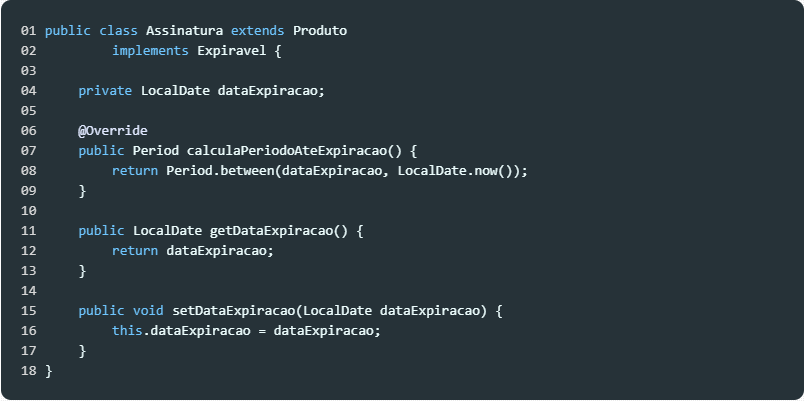
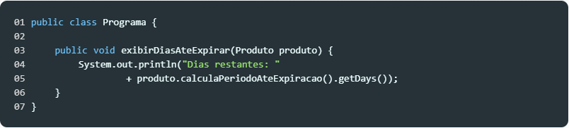

A declaração de classes em Java possui uma sintaxe simples e de fácil compreensão que nos permite criar atibutos, propriedades e métodos. Por exemplo, uma classe chamada Produto, com os seguintes atributos:
A representação desta classe, na sintaxe java seria algo como:
Linha 1: Nessa linha há os seguintes termos: public define que a classe produto estará disponível em todo o projeto; class define que estamos criando uma classe; e produto é o nome da classe.
Linha 3 a 5: Aqui temos o que chamamos de atributos. São variáveis privadas que representam as características da classe. Note o modificador de acesso private, que indica que tais variáveis só poderão ser acessadas de dentro da classe na qual foram declaradas, bem como o tipo e o nome de cada atributo.
Linha 7 a 9: Já aqui temos os métodos da classe, que são públicos. Esses métodos garantem que os atributos da classe não sejam acessados diretamente. Com isso implementamos o encapsulamento, um dos pilares da orientação a objeto.
A herança é um tipo de relacionamento muito comum na orientação a objetos e ocorre quando uma classe descende da outra e herda suas características e comportamentos, além de implementar os seus próprios. Por exemplo, considere o diagrama de classes da figura a seguir, em que a assinatura herda de produto:
Diagrama de classes com assinatura herdando de produto.
Nesse cenário a classe Assinatura herda de Produto e também define propriedade e método próprios. Em java essa classe seria implementada da seguinte forma:

Linha 1: A herança em Java é representada pela palavra-chave extends na declaração
da classe, seguida do nome da classe da qual se deseja herdar. Nesse caso, Assinatura herda de Produto;
Linhas 3, 9 a 11, 13 a 15: Nesse trecho temos o atributo dataExpiração, bem como os
getters e setters que permitem acessar esse atributo;
Linhas 5 a 7: O método calculaPeriodoAteExpiracao retorna um Period, classe nativa do Java que representa um intervalo de tempo (nesse caso o tempo que falta até a assinatura expirar);
Na Orientação a Objetos as interfaces funcionam como contratos, ou seja, elas definem comportamentos que devem ser cumpridos pelas classes. Nesta relação dizemos que Assinatura implementa a interface Expiravel. Na figura a seguir temos um diagrama que mostra uma nova configuração para a relação entre essas classes.
Diagrama de classes com assinatura herdando de produto.
Nesse cenário a interface Expiravel define que toda classe que representa um produto cuja data de expiração ou validade chega ao fim (expira) deve implementar o método calculaPeriodoAteExpiracao. Por exemplo, se tivéssemos outra classe Voucher ou Desconto, por exemplo, ela poderia implementar essa classe a definir o comportamento desse método.
Em java a interface Expiravel seria escrita dessa forma:
Linha 1: Note o uso da palavra reservada interface e também no nome da interface: Expiravel. Em Java convencionou-se nomear as interfaces como Expiravel, Compravel, Colecionavel.
Linha 3: Em uma interface todos os métodos são públicos, portanto é comum omitirmos o modificador de acesso public. Tais métodos também são abstratos e sua implementação fica por conta da classe que implementa a interface.
Agora, considerando que a classe Assinatura implementa a interface Expiravel, seu código seria modificado da seguida forma:
Linha 1: Em Java declaramos a relação de implementação através da palavra-chave implements. Essa declaração deve sempre vir após a declaração da herança, como demonstrado acima.
Linha 6 a 9: Uma vez que Assinatura implementa a interface Expiravel, devemos obrigatoriamente declarar em Assinatura um corpo para o método calculaPeriodoAteExpiracao.
Note a presença da anotação @Override sobre o método calculaPeriodoAteExpiracao, que informa ao compilador que estamos sobrescrevendo o método declarado na interface. @Override garante que as duas assinaturas sejam iguais, gerando um erro de compilação caso não sejam.
Diferente de outras linguagens, no Java a herança múltipla não é permitida. Porém, embora só possamos herdar de uma única classe, é possível implementar diversas interfaces.
Uma interface define um contrato, que além de descrever o que uma classe deve fazer, obriga essa classe a fazê-lo. Geralmente nos valemos desse recurso quando notamos que um certo comportamento é compartilhado entre diferentes classes, tendo como objetivo o reaproveitamento de código através do polimorfismo.
Considere por um momento que sua aplicação contém as classes Assinatura e Desconto. Perceba um comportamento comum entre essas classes: ambas expiram após um certo período de tempo. Mas como modelar esse comportamento já que essas são classes tão distintas? Considerando que em algum momento você precise calcular e exibir os dias restantes até a expiração, a fim de tomar ações baseando-se nesse dado, como fazê-lo sem duplicar seu código?
Uma abordagem pode ser mover o atributo data de expiração para a classe Produto, alterando exibirDiasAteExpirar para receber um Produto.
Mas note que nem todo Produto expira. Além disso, o que fazer com a classe Desconto, que não é um Produto? Para resolver essa questão precisamos isolar o comportamento de expirar em uma outra unidade de código.
Para ilustrar como fazê-lo, vamos redefinir o método exibirDiasAteExpirar para receber a interface Expiravel em lugar de alguma de suas implementações, como Assinatura, Desconto, etc.
E agora nessa nova abordagem, podemos calcular os dias para expiração de forma flexível, independente de qualquer implementação ou código concreto. Resolvemos assim também o problema de termos no futuro diferentes formas para expirar algo. Se quisermos dar dias de redenção na Assinatura antes de registrar sua expiração, por exemplo, nosso programa estará pronto para ser modificado, necessitando apenas de pequenos ajustes em um local específico: a implementação do método calculaPeriodoAteExpiracao do Expiravel correspondente.
A partir desses conceitos podemos criar diversas outras classes e interfaces, com seus atributos, propriedades e métodos específicos.
Fonte: DevMedia